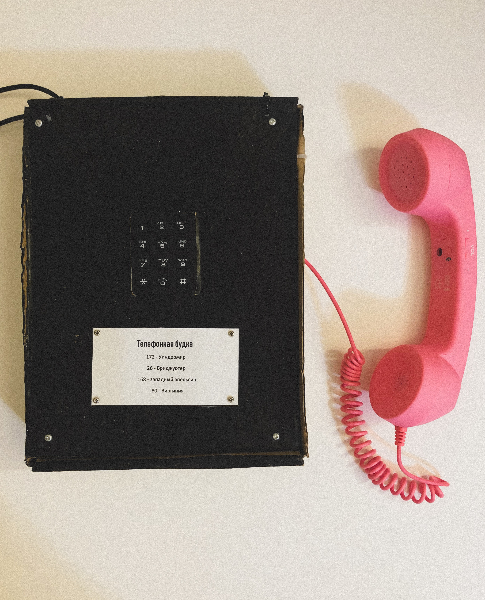
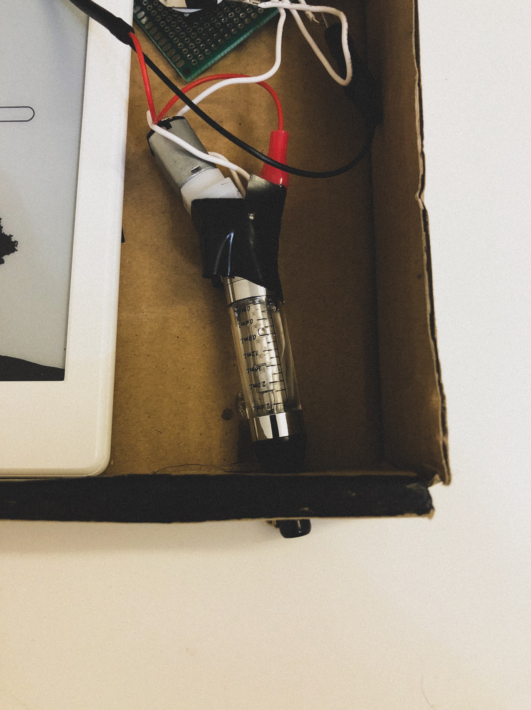
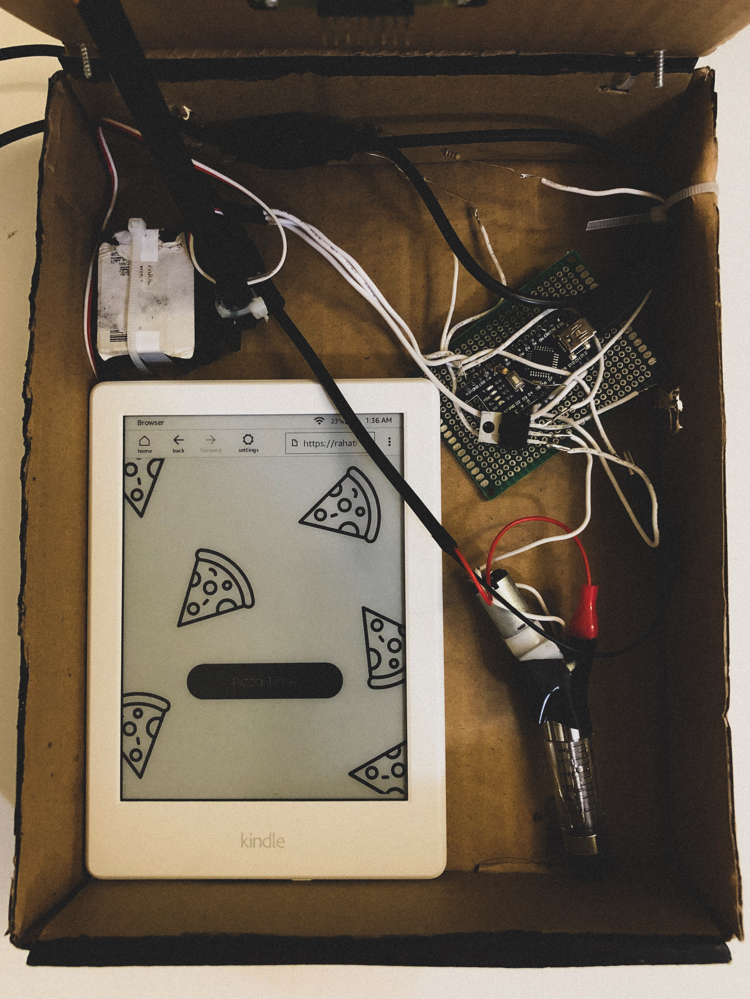
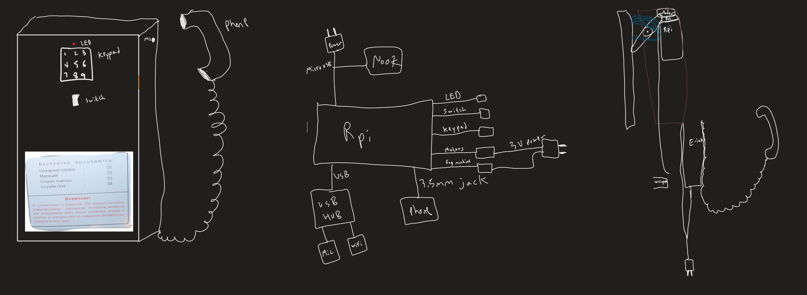
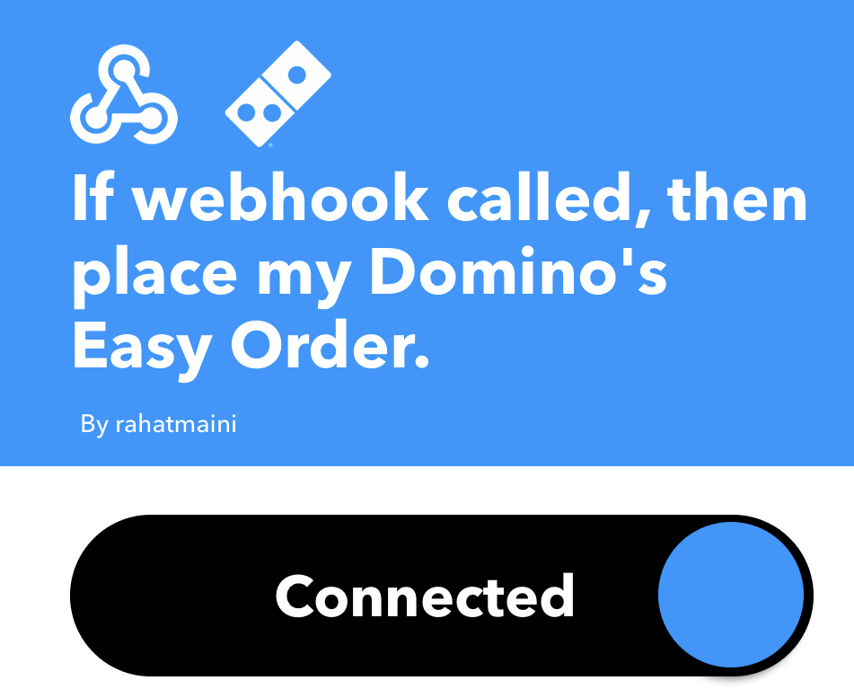
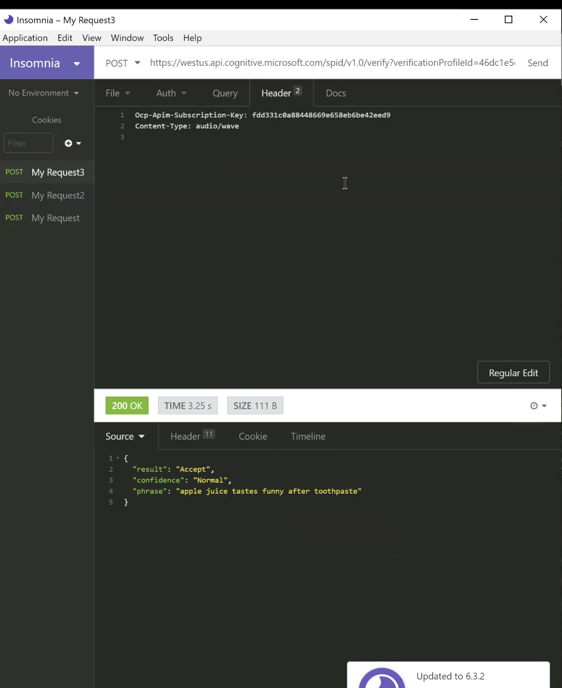
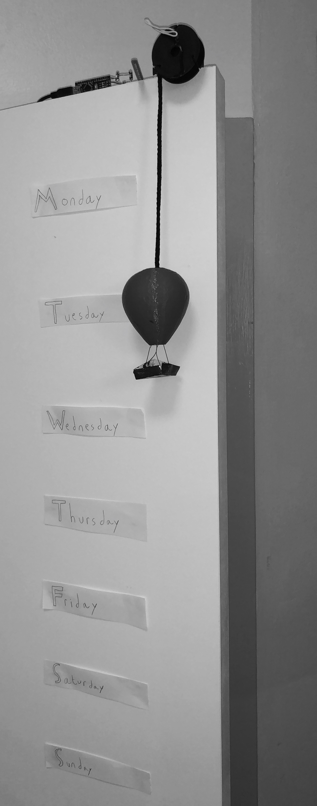
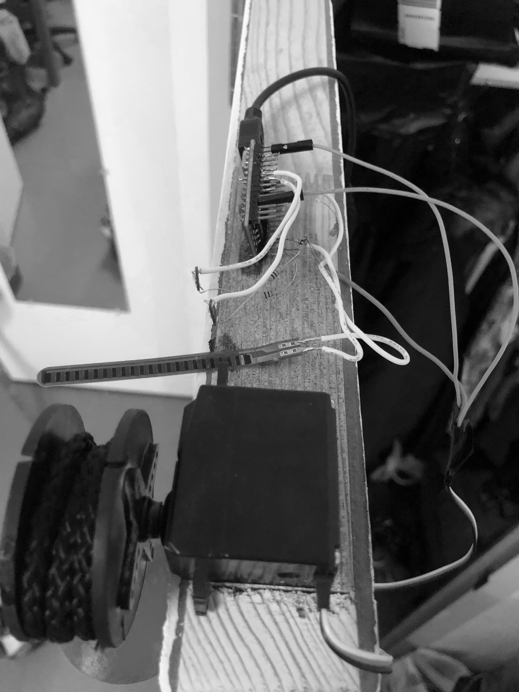
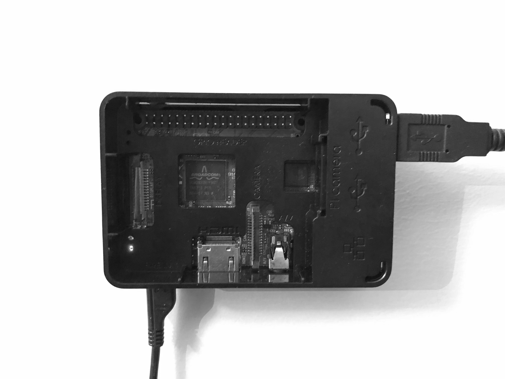
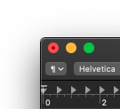

It is tradition for every Mission Impossible movie to have a mission briefing scene, where a good segment of exposition is dumped onto Agent Ethan Hunt through some regular object apparently living a double life. In the 6 movies so far, we’ve seen sunglasses, a disposable camera, a Russian phone booth, a vinyl player, and a hardcover copy of The Odyssey. Oh, and they all “self-destruct”, leaving behind a cloud of smoke (that makes for fantastic looking shots, especially in movies 3 and 6). For this project, I wanted to build an homage to the phone booth from Ghost Protocol, with my own twist. The goal was to develop a payphone that authenticates a user by their voiceprint, allows them to order a pizza, and then in a puff of smoke, returns to inconspicuousness.

The shell of the payphone is constructed from cardboard with a coat of black acrylic paint, with screws adorning every corner of the front plate. These screws serve no purpose, purely aesthetic. Underneath the keypad (also purposeless, as you will see the method of authentication is slightly different from the key/iris scan combo from Ghost Protocol) is a paper label also just to push the Russian payphone aesthetic. Bit of an Easter egg as to what the words actually signify. The pink telephone is a strict deviation from the style, almost anachronistic from the rest of the payphone, and looks more Austin Powers than Mission Impossible. Looking closely at the top, the zip-tie hinges that allow the front plate to swivel open are visible.

Inside, there is a hodge-podge of electronics that I can justify by stating this project is just in its prototypical stage, as a proof of concept. You get a peek at the components here, notably how the matrix keypad is connected to literally nothing. A 180 degree Servo motor (with a Dixon Ticonderoga pencil for an arm) is zip-tied down to the cardboard, and is what pushes the front plate outwards. An Arduino is used for control of the Servo motor, an RGB LED atop the device indicating authentication status (red light, green light, for Mission Impossible 1 fans), and another essential component of the device: the “vaping” mechanism.

In order to successfully pull off the plume of smoke that emanates from every self-destructing gadget in the IMF’s arsenal, a few components were necessary. First, a cartomizer (obtainable from popular vape pens) contains a heating element that will turn the fog juice into its gaseous state, which acts as the smoke. However, a vape pen relies on human power, suction, to move the gaseous material after it has been released in the cartomizer. We obviously do not have access to that, Ethan Hunt doesn’t suck a plume of smoke out of the payphone and make O rings with it. Instead, we use a small fish pump, as you can see taped to to the cartomizer. This fish pump blows out a minuscule but sufficient amount of air, controllable via the Arduino as a standard DC motor, and will push the gas out through the cartomizer, creating the smoke, and the effect is complete.

In this view, you get a clear look at the user interface once the panel swivels open. A Kindle pointing at a website I have set up is active, with a button for “Pizza Time”. The website is linked to the Domino’s IFTTT applet to allow the user to order a predefined pizza at a predefined location ASAP. Not in this view is the Raspberry Pi, which has several essential functions. It must act as the output for the pink telephone (to play an audio file of the mission at hand), and the input via a small USB microphone (as the 3.5mm jack cannot take audio input on the Raspberry Pi). Connected to WiFi, the Pi will take a sample of the user’s voice as they say the passphrase (in this case, “Apple juice tastes funny after toothpaste”), upload it to Microsoft Azure Cognitive Services via a REST API, and upon a successful response message from Azure, communicate to the Arduino to open the front panel and allow for pizza time. Upon successful pizza ordering on the website, the Raspberry Pi receives a ping to command the Arduino to close the front plate and release the plume of smoke, as the audio plays “This message will self destruct in 5 seconds”.

These are some early sketches of how the prototype could’ve looked and been architected. Notably you see there were plans to incorporate the keypad matrix in the system, as well as get rid of the Arduino entirely and have all the motor control take place onboard the Pi (due to lack of PWM control on the Pi and no utility nearby to give the Pi PWM pins, this idea was shelved). A Nook e-reader was planned instead of a Kindle, until the built-in browser on the Kindle prevailed for the pizza ordering site. Different ideas, involving pivots and counterweights, were explored for the most effective front plate opening mechanism for the device. The simplest one ended up being the one that was employed.

IFTTT applet. JavaScript calls the webhook from the webpage on the Kindle.

A visual example of the REST API call performed by a Python script on the Raspberry Pi. A WAV audio file is sent to Azure Cognitive Services, which has been trained with ~10 samples of my voice, and a response is returned with the authentication result and confidence of the system in that result.
After my visit to Monticello, Thomas Jefferson’s residence and burial site, many things stuck with me. All the beds being embedded inside walls, the mimosa pudica in the garden, and especially the Great Clock. Designed by Jefferson in 1792, what most impressed me was the seven day clock, operating through some ingenious system of counterweights and cannonballs I will not pretend to understand. As the week progressed, the cannonballs would descend past the day markers on the wall, indicating which day of the week it was. Inspired to recreate that using electric motors and a microcontroller, I set out to make a modern rendition of the Great Clock, with an additional little internet-connected feature.

Many components went into this little project. First, a microcontroller to control the rotation of the motor was necessary. It would keep track of the day progression (not through a real time clock, but some hacked together implementation of time depending on measuring how long it had been since the microcontroller has been on) and rotate the motor accordingly to spool and unspool the rope. Here you can see up close the servo motor, flex sensor (which gets hit by the motor and lets the Arduino know when to stop rotating the motor), 2 shoddily soldered LEDs, and the Arduino board.

Next, a hot air balloon structure had to be 3D printed. I opted to handmake a little basket out of paper and hang it by actual threads instead of 3D printing the entire model. The balloon was attached to the motor via the black rope. This would be analogous to the cannonballs Jefferson used to mark the day progression.
Finally, the software had to be written. The goals were simple, a week clock and an ambient notification system. The first was programmed entirely into the Arduino, while the second was made possible through a Python script for the Raspberry Pi (the most cost effective way to get an Arduino online seemed to be to purchase a Pi and make a dead simple communication protocol between them). The week clock should be pretty well explained by now, but what is an ambient notification system? Overwhelmed by screens and buzzing and ringing, I wanted a very simple internet connected light. This is more novelty than a solution, but this project is an important lesson in product design. All I want is a visual representation of my progression through the week and a little light that tells me different information through color coding. What kinds of things? For myself, I have it turn blue when it’s raining, red when the temperature is above 90, and blue and red when I have mail and the dorm mailroom is open. The first two cases rely on data from Weather Underground, through an IFTTT applet that my Python script detects, while the last one relies on reading my email and checking against a preprogrammed mailroom schedule to light up the LED when it’s time for me to grab the mail. The possibilities are endless (some might use IFTTT to connect their Ring to it to light up each time motion is detected at their doorbell) and nifty. Not groundbreaking, but a nice modern touch to a cool product. Sometimes that’s all you need.

A really cool aspect of this project was getting the Arduino and the Raspberry Pi to talk to each other (seen above is the wall-mounted Pi, being powered via MicroUSB and powering the Arduino via an onboard USB port). It might’ve been easier to just have the Pi control the LED itself but having the Arduino be the middleman to all physical aspects of the project was an interesting philosophy by which to divvy up the microcontroller vs microcomputer tasks. The Pi would both power the Arduino through its USB port as well as send data (Serial) to it, a very clean and easy solution. The alternative would've been creating a simple two wire protocol from the Pi GPIO to the Arduino's GPIO, where sending different combos of high and low signals across the wires would communicate to the Arduino which state the LEDs need to be in. Instead, the Arduino reads the serial output from the Pi and changes the LED color accordingly.

I enjoyed making this clock, every aspect from 3D printing, to writing the Python script, coming up with actual use cases, and the entire assembly. As many physical consumer electronics products are, this was a multidisciplinary project and I cannot wait for my next one. Until then, all the code for this one can be found on my Github.

macOS has an unusual (to users of Windows since the start, at least) quirk to it. The behavior of the red window bar button is somewhat unpredictable! Apple’s most recent apps (notably the Catalina apps that are part of “Mac Catalyst”, Apple’s project to bring iPadOS apps) behave in the most intuitive way, where the red button closes the app window AS WELL as the entire application process associated with it. However, many apps, 3rd party or 1st, do not terminate on window closure. Terminal and Safari are just the first two that come to mind. I have written an AppleScript (AppleScript script?) to correct this. It can be run in the background using Apple’s built-in task scheduler, some relatively janky automation built with Apple’s preinstalled Automator app, or my preferred method: Download BetterTouchTool (in my opinion a must-have macOS utility), and remap the actual red window bar button across macOS to run the AppleScript below.
macOS Red Button Task Killer
The script begins by retrieving a list of all processes (applications) that are not meant to be background-only processes (so, the Honey browser extension, running in the background, is not something we concern ourselves with. It is not an app that will sit on the dock with an open indicator haunting us). There is a (short) whitelist of apps that should never be killed. I have added Finder and BetterTouchTool to that list, you can add whatever apps you would like if in some cases you do prefer the red button’s default behavior. The script iterates through the list of non-background-only processes, and if a process does not have a window open (so these are apps that you have hit the red button on, but they are “hidden in plain sight”), the “osascript” command (which is the terminal command to execute an AppleScript itself, so likely the parameters that follow it can just be programmed into the AppleScript itself instead of calling a shell script. Left as an exercise to the reader…) then kills the process. Done.
I should preface my motivation to build this script began with Apple populating my dock with apps I closed and would not like to see again till I reopen them. Unlike iOS, there is no elegant hiding of what’s going on in the background; these “closed but open apps” have a prominent indicator on the dock to signify that they are indeed open and the red window bar button is nothing more than a minimize button that doesn’t save app state. The way those billion devices in pockets around the world are an intuitive rethinking of handling application closure, macOS is like a halfway step between Windows and iOS in that regard, for the worse.
Why does macOS behave this way and has been for pretty much its entire existence? Windows and macOS have incredibly different ideas about window management, application interactions, and this is an example of one of those ideas. Windows, true to its name, treats the app window as the entire enclosure of the application, when you close the window, the application ceases. macOS believes an app is more than just the window, that the window is just a component of the whole app process. Hence why you still see the active menu bar after hitting the red button on Safari, and can open a new, different window (maybe a private Safari window, or the Show All History window) from that menu bar with no window for Safari existing. And on Windows the same can only be done once you have a window open for that app to see the menu bar.
These different approaches to apps have different implications for memory and CPU management I presume, and not in a favorable way for Apple I presume. An assumption I make is that there is a tradeoff they have accepted to give users the snappiest performance while balancing computer resources, one that Windows does not bother to concern itself with in regards to this app-closing fiasco. It’s hard to say which approach is objectively better, but it does give “Think Different” some tangible credibility for Apple. Based on the existence of this post, you can probably guess which approach I prefer.